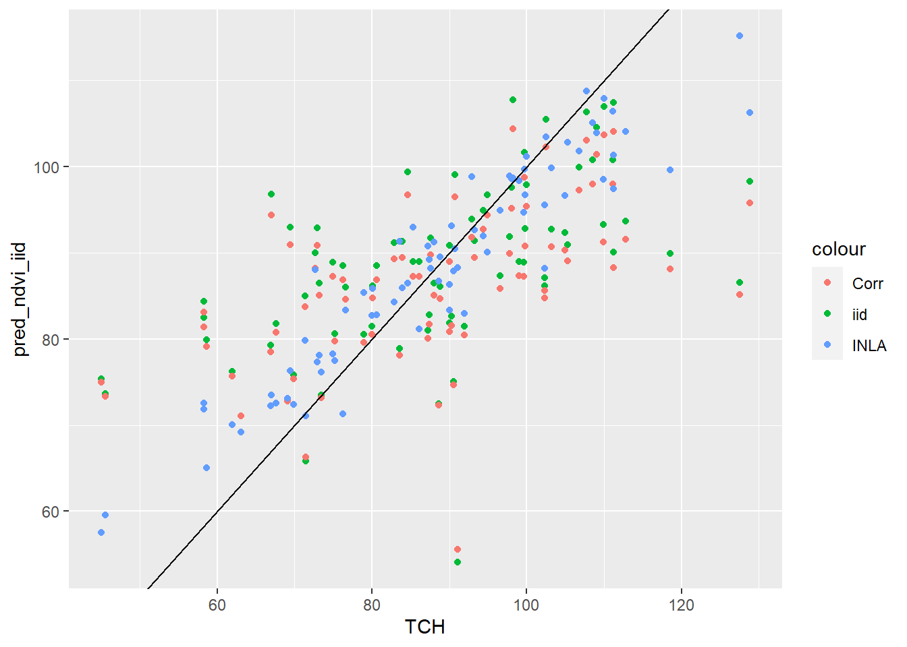

La generación de datos a partir de imágenes satelitales, constituyen una fuente valiosa de información, pudiéndose construir incluso series históricas de imagen de un sitio. En bioestadística este tipo de datos se usa para monitorear ecosistemas, realizar pronósticos climáticos y predecir cosechas, entre otros.
En este caso mostramos la implementación de un análisis exploratorio de datos para caracterizar la variable toneladas de caña por hectárea. Luego estudiaremos el uso de modelos de regresión lineal para estimar rendimientos de caña de azúcar a partir de índices de vegetación elaborados con información proveniente de sensores remotos.
Se utilizaron datos pertenecientes a lotes de producción de caña de azúcar del noroeste argentino, expresados en toneladas de caña por hectárea (TCH) por lote, correspondientes a la zafra de 2009. Se eligieron 79 lotes con fecha de cosecha posterior a la fecha de la imagen satelital y se registraron los valores de TCH y las bandas de la imagen que seria usadas para predecir esa TCH. Todas los lotes fueron cosechado en verde (i.e. no-quema). De cada lote se registró además la edad del cultivo ya que la caña de azúcar es una especie semiperenne y algunos lotes eran del primer año de plantación (caña planta), mientras que otros del segundo año o primer rebrote (soca1) y otros de rebrotes de 2 o más años desde la plantación (entre paréntesis figura el nombre de la variable en el archivo de datos)
Unidad de análisis (UM)
Longitud (X_coord)
Latitud (Y_coord)
Banda 1 de la imagen satelital (Banda1)
Banda 2 de la imagen satelital (Banda2)
Banda 3 de la imagen satelital (Banda3)
Banda 4 de la imagen satelital (Banda4)
Banda 5 de la imagen satelital (Banda5)
Banda 7 de la imagen satelital (Banda7)
Edad en dos categorías: “Planta o Soca1” y “Soca2 o más” (EDAD)
Índice de Vegetación de Diferencia Normalizada (Normalized Difference Vegetation Index,NDVI)
El cálculo del NDVI se basa en la combinación de las bandas 3 (R) y 4 (NIR) ya que las plantas absorben la luz correspondiente a dichas bandas diferencialmente según su estado vegetativo.
NDVI verde (green NDVI, gNDVI). Permite capturar más específicamente la concentración de clorofila.
\[gNDVI = \frac{NIR - G}{NIR + G} = \frac{B4 - B2}{B4 + B2}\] - Índice de Agua de Diferencia Normalizada (Normalized Difference Water Index, NDWI), se relaciona con la cantidad de agua que posee la vegetación.
Índice de Canopeo Normalizado (Normalized Canopy Index, NCI), relacionado con el área foliar. Mayores valores de NCI indican menor área foliar y mayor cantidad de suelo desnudo, es decir menor canopeo.
## inlabru version: 2.5.3
## INLA version: 22.10.13
## Components:
## Intercept: Model types main='linear', group='exchangeable', replicate='iid'
## ndvi: Model types main='linear', group='exchangeable', replicate='iid'
## site: Model types main='spde', group='exchangeable', replicate='iid'
## Likelihoods:
## Family: 'gaussian'
## Data class: 'SpatialPointsDataFrame'
## Predictor: TCH ~ .
## Time used:
## Pre = 4.22, Running = 7.74, Post = 0.466, Total = 12.4
## Fixed effects:
## mean sd 0.025quant 0.5quant 0.975quant mode kld
## Intercept 31.298 16.663 -1.334 31.276 64.047 31.231 0
## ndvi 79.801 24.893 30.758 79.881 128.397 80.043 0
##
## Random effects:
## Name Model
## site SPDE2 model
##
## Model hyperparameters:
## mean sd 0.025quant 0.5quant
## Precision for the Gaussian observations 0.011 0.005 0.005 0.011
## Range for site 6827.928 3239.781 2608.525 6146.314
## Stdev for site 16.247 3.602 10.216 15.895
## 0.975quant mode
## Precision for the Gaussian observations 2.30e-02 0.009
## Range for site 1.51e+04 5005.853
## Stdev for site 2.43e+01 15.241
##
## Deviance Information Criterion (DIC) ...............: 615.48
## Deviance Information Criterion (DIC, saturated) ....: 14385.92
## Effective number of parameters .....................: 37.10
##
## Watanabe-Akaike information criterion (WAIC) ...: 620.13
## Effective number of parameters .................: 32.96
##
## Marginal log-Likelihood: -346.58
## is computed
## Posterior summaries for the linear predictor and the fitted values are computed
## (Posterior marginals needs also 'control.compute=list(return.marginals.predictor=TRUE)')
ggplot() +geom_point(data = predichos_lm, aes(TCH, pred_ndvi_iid, color ='iid')) +geom_point(data = predichos_lm, aes(TCH, pred_ndvi_esp, color ='Corr')) +geom_point(data = predichos_lm, aes(TCH, pred_ndvi_inla, color ='INLA')) +geom_abline(slope =1, intercept =0)

Correr el código
---title: "Ejemplo 1: Modelación del rendimiento de caña de azúcar a partir de información satelital"format: html---## Motivación La generación de datos a partir de imágenes satelitales, constituyen una fuente valiosa de información, pudiéndose construir incluso series históricas de imagen de un sitio. En bioestadística este tipo de datos se usa para monitorear ecosistemas, realizar pronósticos climáticos y predecir cosechas, entre otros.En este caso mostramos la implementación de un análisis exploratorio de datos para caracterizar la variable toneladas de caña por hectárea. Luego estudiaremos el uso de modelos de regresión lineal para estimar rendimientos de caña de azúcar a partir de índices de vegetación elaborados con información proveniente de sensores remotos.## DatosTrabajamos con datos de imágenes del satélite Landsat 5 TM, seleccionadas desde: USGS (USA): <http://earthexplorer.usgs.gov/> e INPE (Brasil): <http://www.inpe.br/>.Se utilizaron datos pertenecientes a lotes de producción de caña de azúcar del noroeste argentino, expresados en toneladas de caña por hectárea (TCH) por lote, correspondientes a la zafra de 2009. Se eligieron 79 lotes con fecha de cosecha posterior a la fecha de la imagen satelital y se registraron los valores de TCH y las bandas de la imagen que seria usadas para predecir esa TCH. Todas los lotes fueron cosechado en verde (i.e. no-quema). De cada lote se registró además la edad del cultivo ya que la caña de azúcar es una especie semiperenne y algunos lotes eran del primer año de plantación (caña planta), mientras que otros del segundo año o primer rebrote (soca1) y otros de rebrotes de 2 o más años desde la plantación (entre paréntesis figura el nombre de la variable en el archivo de datos)- Unidad de análisis (UM)- Longitud (X_coord) - Latitud (Y_coord) - Banda 1 de la imagen satelital (Banda1) - Banda 2 de la imagen satelital (Banda2) - Banda 3 de la imagen satelital (Banda3) - Banda 4 de la imagen satelital (Banda4) - Banda 5 de la imagen satelital (Banda5) - Banda 7 de la imagen satelital (Banda7) - Edad en dos categorías: "Planta o Soca1" y "Soca2 o más" (EDAD)- Toneladas de caña por ha (TCH) ### Lectura base de datos```{r}#| code-fold: true#| code-summary: "Carga paquetes y funciones"library(nlme)library(dplyr)library(ggplot2)library(sf)library(tmap)resumir_modelo <-function(modelo) { rmse <-function(modelo) {sqrt(mean(modelo$residuals^2)) } aic <-AIC(modelo) bic <-BIC(modelo) my_rmse <-rmse(modelo) regresora <-paste(attr(modelo$terms,"term.labels"), collapse =", ") conCor <-ifelse(length(modelo$modelStruct), 'Si', 'No')data.frame('Indice'= regresora,'ConCorr'= conCor,'AIC'= aic,'BIC'= bic,'RMSE'= my_rmse, check.names =FALSE)}diferenciaNormalizada <-function(x, y) { (x - y) / (x + y)}tmap_options(basemaps =c('Satelital'= leaflet::providers$Esri.WorldImagery,'OSM'= leaflet::providers$OpenStreetMap))``````{r}datos <-read.table("data/No_quemadas.txt")```### Cálculos de índices a partir de las bandas- Índice de Vegetación de Diferencia Normalizada (Normalized Difference Vegetation Index,NDVI)::: {.callout-noet appearance="simple"}El cálculo del NDVI se basa en la combinación de las bandas 3 (R) y 4 (NIR) ya que las plantas absorben la luz correspondiente a dichas bandas diferencialmente según su estado vegetativo.:::$$NDVI = \frac{NIR - R}{NIR + R} = \frac{B4 - B3}{B4 + B3}$$- NDVI verde (green NDVI, gNDVI). Permite capturar más específicamente la concentración de clorofila. $$gNDVI = \frac{NIR - G}{NIR + G} = \frac{B4 - B2}{B4 + B2}$$- Índice de Agua de Diferencia Normalizada (Normalized Difference Water Index, NDWI), se relaciona con la cantidad de agua que posee la vegetación.$$NDWI = \frac{NIR - SWIR}{NIR + SWIR} = \frac{B4 - B7}{B4 + B7}$$- Índice de Canopeo Normalizado (Normalized Canopy Index, NCI), relacionado con el área foliar. Mayores valores de NCI indican menor área foliary mayor cantidad de suelo desnudo, es decir menor canopeo.$$NCI = \frac{SWIR - G}{SWIR + G} = \frac{B5 - B2}{B5 + B2}$$```{r}datos <- datos |>mutate(ndvi =diferenciaNormalizada(Banda4, Banda3),gndvi =diferenciaNormalizada(Banda4, Banda2),ndwi =diferenciaNormalizada(Banda4, Banda7),nci =diferenciaNormalizada(Banda5, Banda2) )```### Visualización espacial de los datos```{r}datos_sf <- sf::st_as_sf(datos,coords =c('X_coord', 'Y_coord'),crs =32720)tmap_mode('view')```:::: {.columns}::: {.column width="49%"}```{r}tm_shape(datos_sf) +tm_dots(col ='TCH')```:::::: {.column width="2%"}:::::: {.column width="49%"}```{r}tm_shape(datos_sf) +tm_dots(col ='EDAD')```:::::::### Estadística descriptiva#### Gráficos```{r}#| fig-subcap: ["Histograma", "Gráfico de cajas"]#| layout-ncol: 2ggplot(datos, aes(TCH)) +geom_histogram(aes(y =after_stat(count /sum(count))),bins =15) +labs(y ='Frecuencia Relativa')ggplot(datos, aes(EDAD, TCH)) +geom_boxplot(width =0.25)```### Análisis de regresión Lineal#### NDVI::: {.column-margin}```{r}#| label: fig-ndvi#| fig-cap: "TCH en función de NDVI"#| column: margin#| echo: trueggplot(datos, aes(ndvi, TCH)) +geom_point()```:::```{r}modelo_ndvi <-gls(TCH ~ ndvi, data = datos, method ='REML')summary(modelo_ndvi)``````{r, include=FALSE,purl=FALSE}# modelo_ndvi_gls_ml <- nlme::gls(TCH ~ ndvi, data = datos, method = "ML")# modelo_ndvi_gls_reml <- nlme::gls(TCH ~ ndvi, data = datos, method = "REML")```#### gNDVI::: {.column-margin}```{r}#| label: fig-gndvi#| fig-cap: "TCH en función de gNDVI"#| column: margin#| echo: trueggplot(datos, aes(gndvi, TCH)) +geom_point()```:::```{r}modelo_gndvi <-gls(TCH ~ gndvi, data = datos, method ='REML')summary(modelo_gndvi)```#### NDWI::: {.column-margin}```{r}#| label: fig-ndwi#| fig-cap: "TCH en función de NDWI"#| column: margin#| echo: trueggplot(datos, aes(ndwi, TCH)) +geom_point()```:::```{r}modelo_ndwi <-gls(TCH ~ ndwi, data = datos, method ='REML')summary(modelo_ndwi)```#### NCI ::: {.column-margin}```{r}#| label: fig-nci#| fig-cap: "TCH en función de NCI"#| column: margin#| echo: trueggplot(datos, aes(nci, TCH)) +geom_point()```:::```{r}modelo_nci <-gls(TCH ~ nci, data = datos, method ='REML')summary(modelo_nci)```### Resumen de modelos ajustados```{r}rbind(resumir_modelo(modelo_ndvi),resumir_modelo(modelo_gndvi),resumir_modelo(modelo_ndwi),resumir_modelo(modelo_nci) )```## Ajuste espacial```{r}#| label: modelo-corr-ndvimodelo_ndvi_conCorr <-gls(TCH ~ ndvi, correlation =corExp(form =~as.numeric(as.character(X_coord)) +as.numeric(as.character(Y_coord)),metric ="euclidean",nugget =FALSE ),data = datos,method ='REML')summary(modelo_ndvi_conCorr)``````{r}#| label: modelo-corr-gndvimodelo_gndvi_conCorr <-gls(TCH ~ gndvi, correlation =corExp(form =~as.numeric(as.character(X_coord)) +as.numeric(as.character(Y_coord)),metric ="euclidean",nugget =FALSE ),data = datos,method ='REML')summary(modelo_gndvi_conCorr)``````{r}#| label: modelo-corr-ndwi#| modelo_ndwi_conCorr <-gls(TCH ~ ndwi, correlation =corExp(form =~as.numeric(as.character(X_coord)) +as.numeric(as.character(Y_coord)),metric ="euclidean",nugget =FALSE ),data = datos,method ='REML')summary(modelo_ndwi_conCorr)``````{r}#| label: modelo-corr-ncimodelo_nci_conCorr <-gls(TCH ~ nci, correlation =corExp(form =~as.numeric(as.character(X_coord)) +as.numeric(as.character(Y_coord)),metric ="euclidean",nugget =FALSE ),data = datos,method ='REML')summary(modelo_nci_conCorr)``````{r}rbind(resumir_modelo(modelo_ndvi),resumir_modelo(modelo_ndvi_conCorr),resumir_modelo(modelo_gndvi),resumir_modelo(modelo_gndvi_conCorr),resumir_modelo(modelo_ndwi),resumir_modelo(modelo_ndwi_conCorr),resumir_modelo(modelo_nci),resumir_modelo(modelo_nci_conCorr) )``````{r}ef_fijos_ndvo_iid <-summary(modelo_ndvi)ef_fijos_ndvo_iid$tTable``````{r}ef_fijos_ndvo_corr <-summary(modelo_ndvi_conCorr)ef_fijos_ndvo_corr$tTable``````{r obs-pred-lm}#| fig-column: page#| layout-ncol: 2#| layout-nrow: 1predichos_lm <- datospredichos_lm$pred_ndvi_iid <-predict(modelo_ndvi)predichos_lm$pred_ndvi_esp <-predict(modelo_ndvi_conCorr)ggplot(predichos_lm, aes(pred_ndvi_iid, TCH)) +geom_point() +geom_abline(slope =1, intercept =0)ggplot(predichos_lm, aes(pred_ndvi_esp, TCH)) +geom_point() +geom_abline(slope =1, intercept =0)ggplot(predichos_lm, aes(pred_ndvi_esp, pred_ndvi_iid)) +geom_point() +geom_abline(slope =1, intercept =0)```# INLA```{r}# if (!requireNamespace("BiocManager", quietly = TRUE))# install.packages("BiocManager")# BiocManager::install(c("graph", "Rgraphviz"), dep = TRUE)# # install.packages(# "INLA",# repos = c(getOption("repos"), INLA = "https://inla.r-inla-download.org/R/testing"),# dep = TRUE# )# https://www.r-inla.org/download-installlibrary(INLA)library(inlabru)``````{r}inla.setOption(inla.mode ='experimental')```### Generación grilla espacial y modelo Matern SPDE ```{r generacion-grilla-inla}loc <-st_coordinates(datos_sf)mesh <- INLA::inla.mesh.2d(loc = loc,offset =c(1000, 4000),cutoff =800,max.edge =c(1000, 2000),max.n =10000)ggplot(datos_sf) +gg(mesh) +geom_sf()spde <- INLA::inla.spde2.pcmatern(mesh = mesh,prior.range =c(2000, 0.05),prior.sigma =c(200, 0.01))``````{r, eval=FALSE}proj_obs <-inla.mesh.projector(mesh, loc = loc)proj_pred <-inla.mesh.projector(mesh, loc = mesh$loc)A_obs <-inla.spde.make.A(mesh, loc = loc)A_pred <-inla.spde.make.A(mesh, loc = proj_pred$loc)idx <-1:spde$n.spdestack_obs <-inla.stack(data =list(y = datos_sf$TCH),A =list(A_obs, 1),effects =list(c(list(Intercept =1),inla.spde.make.index("spatial", spde$n.spde) ),covar = datos_sf$ndvi),tag ="obs" )stack_pred <-inla.stack(data =list(y =NA),A =list(A_pred),effects =list(c(list(Intercept =1),inla.spde.make.index("spatial", mesh$n) )),tag ="pred" )stack <-inla.stack(stack_obs, stack_pred)formula <- y ~-1+ Intercept + covar +f(spatial, model = spde)result1 <-inla( formula,data =inla.stack.data(stack_obs, spde = spde),family ="gaussian",control.predictor =list(A =inla.stack.A(stack_obs),compute =TRUE))summary(result1)plot(datos_sf$TCH, result1$summary.fitted.values[inla.stack.index(stack_obs, "obs")$data, "mean"],main ="Observations vs posterior predicted values at the data locations")# # field_pred <- inla.mesh.project(proj_pred,# result1$summary.fitted.values[inla.stack.index(stack, "pred")$data, "mean"])# field_pred_sd <- inla.mesh.project(proj_pred,# result1$summary.fitted.values[inla.stack.index(stack, "pred")$data, "sd"])# # image(inla.mesh.project(mesh,# field = field_pred,# dims = c(200, 200)),# main = "Posterior field mean")# image(inla.mesh.project(mesh,# field = field_pred_sd,# dims = c(200, 200)),# main = "Prediction standard deviation")``````{r ajuste-inlabru}#| column: page-right#| layout-align: center#| ndvi_bru_spde <-bru( TCH ~Intercept(1) + ndvi +site(main = coordinates, model = spde),family ="gaussian",data =as_Spatial(datos_sf) )summary(ndvi_bru_spde)``````{r}#| column: screen-inset-shaded#| layout-nrow: 1plot(ndvi_bru_spde, "Intercept")plot(ndvi_bru_spde, "ndvi")plot(ndvi_bru_spde, "site")``````{r}spde.posterior(ndvi_bru_spde, "site", what ="matern.covariance") -> covplotspde.posterior(ndvi_bru_spde, "site", what ="matern.correlation") -> corplotspde.posterior(ndvi_bru_spde, "site", what ="range") -> rngplotspde.posterior(ndvi_bru_spde, "site", what ="log.range") -> lgrngplotspde.posterior(ndvi_bru_spde, "site", what ="variance") -> varplotspde.posterior(ndvi_bru_spde, "site", what ="log.variance") -> lgvarplotmultiplot(plot(covplot), plot(corplot),plot(rngplot), plot(lgrngplot),plot(varplot), plot(lgvarplot))```#### Observados vs. distribución a posteriori```{r}pred_mesh <-predict(ndvi_bru_spde, as_Spatial(datos_sf), ~ Intercept + ndvi + site)predichos <-st_as_sf(pred_mesh)ggplot(predichos, aes(mean, TCH)) +geom_point() +geom_abline(slope =1, intercept =0)# pred_mesh <-# predict(ndvi_bru_spde, pixels(mesh), ~ Intercept + ndvi + site)# # ggplot() +# gg(pred_mesh)# ggplot(datos_sf) +# gg(pred_mesh) +# gg(mesh) +# geom_sf()``````{r}predichos_lm$pred_ndvi_inla <- predichos$meanggplot(predichos_lm, aes(pred_ndvi_iid, TCH)) +geom_point() +geom_abline(slope =1, intercept =0)ggplot(predichos_lm, aes(pred_ndvi_esp, TCH)) +geom_point() +geom_abline(slope =1, intercept =0)ggplot() +geom_point(data = predichos_lm, aes(TCH, pred_ndvi_iid, color ='iid')) +geom_point(data = predichos_lm, aes(TCH, pred_ndvi_esp, color ='Corr')) +geom_point(data = predichos_lm, aes(TCH, pred_ndvi_inla, color ='INLA')) +geom_abline(slope =1, intercept =0)```